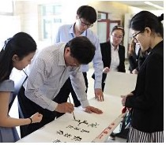
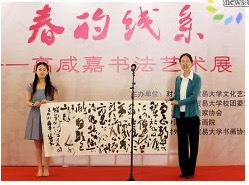
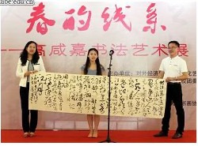

My Artist Career
Chinese Calligraphy
I am a professional artist specializing in Chinese calligraphy. Long before I began working with data and models, I learned to think through the movement of a brush. I began practicing Chinese calligraphy in childhood and later studied under Nie Chengwen, a distinguished contemporary calligrapher who served for three consecutive terms as vice chairman of the China Calligraphers Association and now serves as an advisor to the Association. My training spans clerical (隶书), cursive (草书), regular (楷书), running (行书), and seal (篆书) scripts, yet my artistic language is grounded most deeply in clerical script (隶书). I am drawn to its broad, weighty forms and monumental strength—an aesthetic of 雄浑厚重. Combined with a distinctly northern Chinese temperament—direct, open, and unrestrained—it has shaped a style that is grounded in structure yet expansive in scale and spirit, with a sense of breadth and grandeur (大气恢弘). These qualities taught me to see discipline and expression not as opposites, but as forces that give each other form. Over time, I joined the Liaoning Calligraphers Association and published Xianjia Gao Calligraphy Collection. Calligraphy remains a living artistic practice—one that continues to shape how I observe, compose, and make decisions.
仰观宇宙之大，
俯察品类之盛。“Look up at the vastness of the universe; look down at the richness of all things.”
Wang Xizhi, Lantingji Xu
Why Wang Xizhi (王羲之)
Of all classical calligraphers, Wang Xizhi is the artist I return to most often. I admire not only the elegance of his line, but also the intelligence of his balance: restraint without stiffness, variation without disorder, and movement held together by structure.
His words from Lantingji Xu capture what I value in both art and inquiry—the ability to hold the whole in view while remaining attentive to the richness of each particular.
A distinctive week in Beijing
Two solo exhibitions, five days apart
In May 2016, I presented two solo exhibitions in Beijing. Spring Lines opened at the University of International Business and Economics on May 10; the university described it as its first solo exhibition by a current student in recent years. Xian · Ink opened five days later at Shengshi Tiankong Art Museum in the 798 Art District. At the first exhibition, I donated two works to the university library and its Department of Culture and Arts.
From Spring Lines


Photographs: University of International Business and Economics News
Selected Works
Calligraphy in progress and large-format works presented at Spring Lines.



Selected Exhibitions
- Xian · Ink
Shengshi Tiankong Art Museum, 798 Art District, Beijing · 2016 - Spring Lines
University of International Business and Economics, Beijing · 2016
Publication & Community
- Secretary-General, Beijing University Painting and Calligraphy Federation · 2015–2016
- Published Xianjia Gao Calligraphy Collection · 2012
- Member, Liaoning Calligraphers Association · since 2008